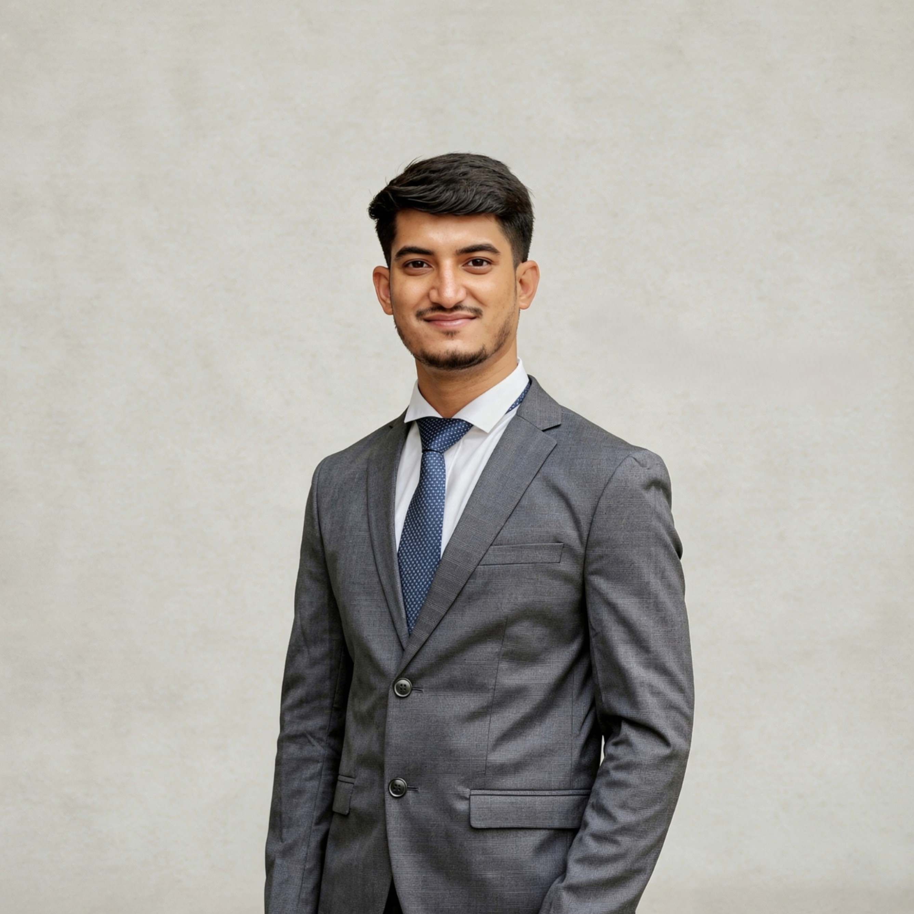

About Me
I am a civil and transportation engineer and Teaching Assistant at the Department of Civil Engineering, Bangladesh University of Engineering and Technology (BUET). My work sits at the intersection of travel demand modeling, freight trip generation, and sustainable urban mobility—with a strong emphasis on turning field data and statistical insight into decisions that improve how cities move.
I completed my B.Sc. in Civil Engineering at Gopalganj Science and Technology University (CGPA 3.53/4.00), with a major in Transportation and a minor in Environment. My undergraduate thesis developed a traditional travel demand model for Khulna Metropolitan City through extensive field surveys, stakeholder engagement, and statistical analysis. That experience shaped my current M.Sc. research at BUET on freight trip generation models and environmentally responsible freight and urban transport planning.
Beyond academic research, I contribute to collaborative work on emergency response accessibility in mixed-traffic megacities, hybrid choice modeling in transportation, and curriculum benchmarking for civil engineering programs—always with an eye toward practical, policy-relevant outcomes.
Education
A continuous path from strong secondary science results through a focused civil engineering degree to specialized graduate work in transportation at Bangladesh’s leading engineering university.
Professional Experience
Research
Work that connects rigorous statistical and spatial methods with real operational and policy questions in developing-country and mixed-traffic contexts.
Data-driven analysis and modeling of freight demand with an emphasis on strategies that support efficient and environmentally responsible freight and urban mobility planning at BUET.
Collaborative development of a comprehensive TDM for Khulna through field surveys, stakeholder consultations, systematic data collection, statistical analysis, and modeling—strengthening expertise applicable to real-world infrastructure projects.
Two-level framework combining multi-interaction OLS and K-means clustering to identify overloaded fire stations and compounding drivers of excess travel time in a stochastic mixed-traffic network without priority protocols.
Systematic review synthesizing the development, applications, and methodological trajectory of HCMs—linking latent attitudes and perceptions with discrete choice models for more behaviorally realistic policy analysis.
Technical Skills
Future Goals
I am looking for roles and collaborations where academic rigor and field experience translate into infrastructure and mobility systems that work better for people and cities.
Contribute to projects that improve infrastructure and urban transport systems in practical, environmentally responsible ways—especially in data-scarce and rapidly urbanizing contexts.
Deepen expertise in freight trip generation, travel demand modeling, and hybrid behavioral frameworks so that policy and investment decisions rest on stronger evidence.
Build a career that combines teaching, research, and applied practice—working on solutions that make a genuine difference in how cities and communities move and develop.
Contact
Open to research collaboration, teaching and industry roles in transportation and civil engineering, and conversations about sustainable mobility in mixed-traffic cities.
Dhaka-1000, Bangladesh